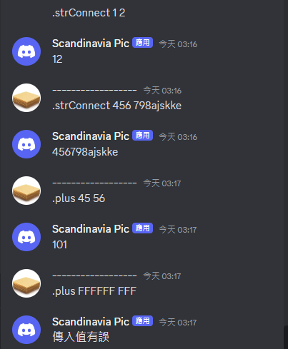

基礎建構
在經過前期準備工作後，現在便可以正式進入寫程式的部分了。
此節將會著重介紹每一個機器人都應該會有的基本框架，與我個人在撰寫過程中習慣使用的一些常用指令。
1. 引入庫
我們先使用pip對庫進行引入。
第一項為discord官方提供的庫，第二項為管理環境變數使用的庫，由於將token直接放置於檔案內時，在使用如github等版本管理軟體時可能會產生安全問題，故建議安裝。
Terminal:
- pip install discord
- pip install dotenv
2. 簡易範例:登入提示
隨後我們便可由下列的基本框架開始，請注意複製後須自行縮排。
python3.10:
- import discord
- import os
- from dotenv import load_dotenv
- load_dotenv() #載入環境變數
- os.chdir(os.path.dirname(os.path.abspath(__file__))) #調整相對路徑到以此檔案為基準
- token = os.getenv('token') #取出值
- client = discord.Client(intents=discord.Intents.all()) #建立client物件以節省打字量 intent為各種訊息存取權，由於先前的設定我們可以選擇全部。
- @client.event #用以呼叫函式組
- async def on_ready(): #當就緒時>進行下列動作
- print(f'目前登入身份：{client.user}')
- client.run(token) #須注意本列必須放在程式最末尾
直到這邊還不能直接運行，由於token並未載入環境變數，我們需要建立一個名為".env"的文件於python源代碼所保存的目錄，並且在內部貼入'token = "[複製下來的token]"'。
這個操作最好在IDE內操作，檔案總管不允許建立只有副檔名的檔案。
如此便構成了最基礎的機器人，在上線時會在Terminal打印自身的名字。
嘗試運行的話便可觀察到其上線狀態與Terminal中的訊息。
3. 關鍵字監聽與訊息發送
我們可以利用
- @client.event
- async def on_message(message): #當有訊息傳出時....
- if message.content.startswith("XXXX"): #若訊息開頭為XXXX 則....
來進行關鍵字的探測
此功能是大部分指令觸發的前提，由於其監聽的訊息是所有訊息，因此最好使用較為少用的字串作為前綴。
舉例來說，若是一個用來下載某些東西的指令，使用".dl","!dl"等皆可，但應避免"dl"或"download"一類直接使用單字作為開頭的觸發語，以免在正常聊天時錯誤觸發。
隨後則是發送訊息的方法
在on_message函式下方，我們可以使用
- await message.channel.send("XXXX")
用以在接收到訊息的頻道發送訊息。
以下提供一個範例:
- if message.author == client.user: #避免自身發出的訊息觸發指令
- return
- if message.content.startswith(".hello")
- await message.channel.send("Hello world!")
4. 基礎練習
試著使用上述的語法，建立自己的第二個指令吧。
5. 多傳入值與函式
我們能接收到的傳入值是字串形式的完整訊息，因此我們可以使用split的內置method來切分訊息為list，進而達成多輸入的目的。
如果要處理更為複雜的任務，我們便應該將功能寫為函式以保證可讀性。
- if message.content.startswith(".strConnect"):
- contents = message.content.split(" ")
- rply = contents[1] + contents[2]
- await message.channel.send(f"{rply}")
- if message.content.startswith(".plus")
- contents = message.content.split(" ")
- try: #在發生錯誤時傳出except的值
- rply = plus(content[1], content[2])
- await message.channel.send(f"{rply}")
- except:
- await message.channel.send("傳入值有誤")
- def plus(x: int, y: int):
- x, y = int(x), int(y)
- return x + y
可以期望看到如下的結果。
